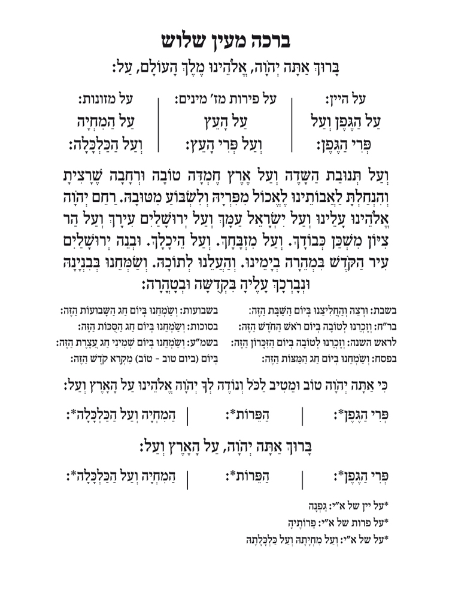

<div class="wrapp-app">
    <!--  [style.background]="getCurrImg()" -->
    <app-header></app-header>
    <div class="content">
        <ng-container *ngIf="isInFocus; else elseTemplate">
            <router-outlet></router-outlet>
        </ng-container>
        <ng-template #elseTemplate>
            <div class="img-wrapp">
                <div class="img-div">
                    
                </div>
            </div>
        </ng-template>
    </div>
    <app-footer></app-footer>
</div>